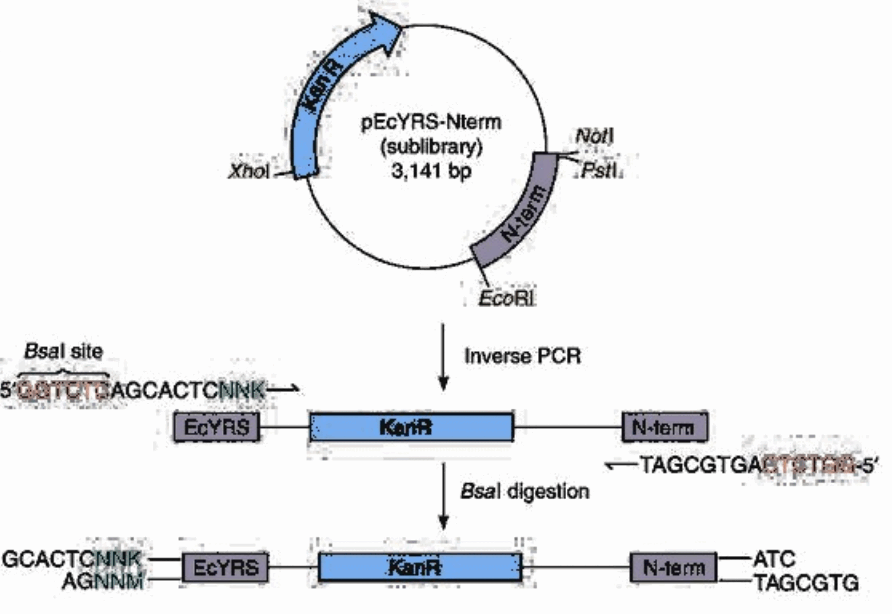
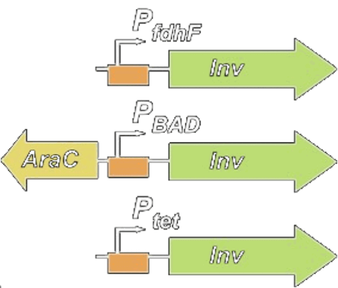
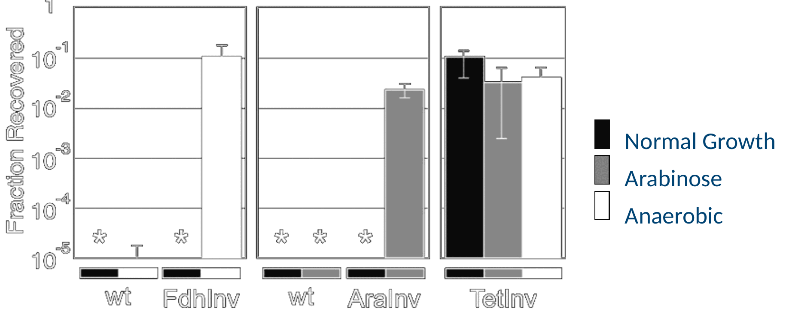

Combinatorial Libraries

Template oligos:
GAGGATCCCGAACGGACNNNNNNNNNNNNNNNNNNNNNNNNNNNNNNNNNNNNNNNNNNNNNNNNNNNNNNNNNNNNNNNNNNNNNNNNNNNNNNNNNNNNNNNNNNNNGCACACGCGGAATTCCCTATAGTGAGTCGTATTA
T7 Universal Promoter Oligo:
TAATACGACTCACTATAGGG


Oca939F Forward construction of N8 library CcatagaattcggagagatgccggagcggctgaacggaccggtNNNNNNNNaccggagtaggggcaactctacc Oca939R Reverse construction of N8 library gtcatctgcagtggcggagagagggggatttgaacccccggtagagttgcccctactccgg
J Mol Biol. 2001 Mar 30;307(3):755-69. PMID: 11273699
One of the simplest ways of making a combinatorial library is to employ an overlap extension reaction also known as a Klenow extension or wobble. The differences between these terms deal with the details of which polymerase and temperature conditions you employ, but the oligo design is the same for each. You learned this method as a means of making short parts on the size range of 30 to 130 bp in length, and those size constraints similarly apply here. This approach is useful when all the diversity you wish to create is localized to a small region of the sequence, and you can have restriction sites fairly close to that site. Here we’re looking at a library of tRNA-coding genes in which the anticodon loop is replaced by 8 random nucleotides. You would order two oligos with 5’ tails, in this case EcoRI and PstI restriction sites, and then the tRNA sequence. The last 20 bp of the oligos need to be complementary to one another so that they can anneal, and then a DNA polymerase will extend the sequences to full length. You’d then digest with EcoRI and PstI and ligate the material into a vector containing promoters and such. A Klenow or wobble library: a tRNA gene whose anticodon loop has been replaced by eight N's, built from two oligos that overlap by twenty bases at their 3' ends and are filled in by a polymerase. The 5' tails carry an EcoRI site on one oligo and a PstI site on the other, for cloning into a vector.

PCR P6libF/P6libR on pTP1 (3583bp, P6) Assemble P6 (BsaI, pP6) Transform pP6 (Mach1, Amp)
P6libF
ccaaaggtctcATTATANNNNNNNNNNNNNNNNNTGTCAANNNNGAacccaggactcctcgaagtcgttcttaagacaac
P6libR
CagttGGTCTCAATAATNNNNNNANNNNGTtagtatttctcctcgtctacggttaactgatactc
pP6
GAGGAGTCCTGGGTTCNNNNTTGACANNNNNNNNNNNNNNNNNTATAATNNNNNNANNNNGTTAGTATTTCTCCTC
BseRI -35 -10 +1 BseRI
What is the theoretical diversity of this library?
4^31 variants = 4.6x10^18 possible sequences
Count the number of each degenerate base, multiple each by the number of bases represented by each degeneracy code. Multiply all those together. The students' own pP6 library, written out: two oligos, P6libF and P6libR, each carrying a BsaI site and a run of N's, assembled into pP6, whose promoter has degenerate bases scattered around a fixed -35 and -10. Thirty-one of the positions are N.


Nat Protoc. 2007;2(10):2590-600. PMID: 17948002
Biotechniques. 1992 Aug;13(2):214-20. PMID: 1327007


L1 5R aatARRRRAaatactagRTG L2 4D aatADDDDAaatactagATG L3 N3R aNNNggagaaatactagRTG L4 PWM aatNVWGGRDatactagATG


In C6-Tools:



J Mol Biol. 2006 Jan 27;355(4):619-27 PMID: 16330045
Saturation mutagenesis can also be applied to regulatory elements. A very common trick in synthetic biology is to construct RBS libraries out of a genetic construct. Here, we are trying to adjust the RBS of a gene called invasin such that the expression of the gene is dependent on the promoter upstream. When you simply put a promoter in front of gene, very often you will get a constitutive on or off device because the rates don’t match up. By adjusting the RBS, you can tune the amount of protein made per transcript up or down and make them match. An RBS library used to make a device actually obey its promoter: three invasin constructs under an anaerobic, an arabinose-inducible and a constitutive promoter, and the invasion assay showing each one responding to its own signal and nothing else.